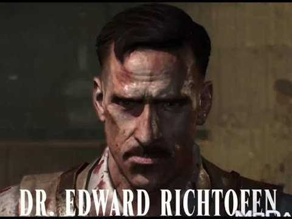
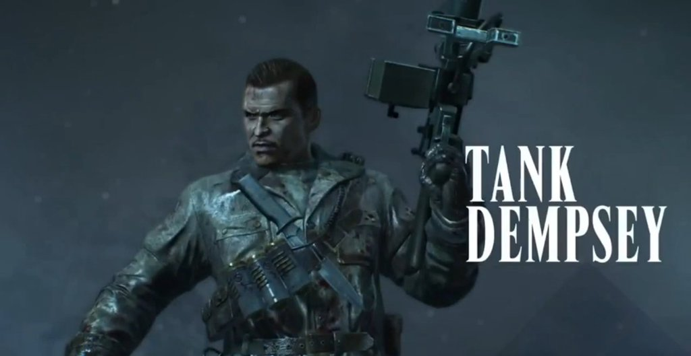
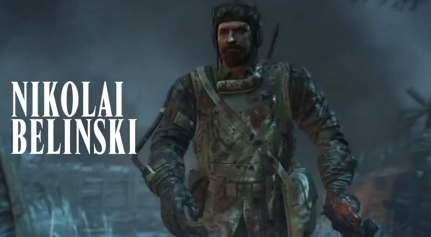
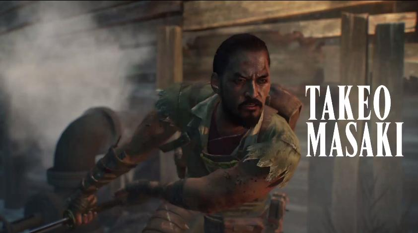

Characters
Richtofen
Doctor Edward Richtofen is a German scientist and a sociopath in the Zombies storyline and also a playable character in the Zombies game mode. His player indicator color is normally green (shared with Fidel Castro and Michael Rooker), but is randomized in Moon and in all subsequent maps. Richtofen's voice appears in Call of Duty: Black Ops II in all maps set in the future, whilst an alternate version of him appears in Origins. This Richtofen also appears in Call of Duty: Black Ops III, in the ending cutscene of Shadows of Evil, and as a playable character in The Giant (which also features the Original timeline Richtofen during the opening cutscene), Der Eisendrache, and Zetsubou No Shima.
During the years of World War II, Doctor Ludvig Maxis formed Group 935, a research team dedicated to improving the human condition. Major General Richtofen, at the time, was Maxis' assistant. They would work together on many projects, though Richtofen would soon find out that Maxis had agreed to create weapons to help the Nazis in the war, due to a lack of funding. Richtofen also carried out his own experiments in the field of teleportation, along with fellow Group 935 member Dr. Schuster. Though he was successful at teleporting a walnut, Maxis did not agree to fund his project, and told him to get back to his "real work".
During the years of World War II, Doctor Ludvig Maxis formed Group 935, a research team dedicated to improving the human condition. Major General Richtofen, at the time, was Maxis' assistant. They would work together on many projects, though Richtofen would soon find out that Maxis had agreed to create weapons to help the Nazis in the war, due to a lack of funding. Richtofen also carried out his own experiments in the field of teleportation, along with fellow Group 935 member Dr. Schuster. Though he was successful at teleporting a walnut, Maxis did not agree to fund his project, and told him to get back to his "real work"...
"Tank"Dempsey
Corporal "Tank" Dempsey is an American Marine who fought in the United States Marine Corps, and is a playable main character in the Zombies game mode. His player indicator color is white (shared with John F. Kennedy and Sarah Michelle Gellar), but is randomized in his appearances since and including Moon. An alternate version of Dempsey is introduced in Origins, and reappears in Call of Duty: Black Ops III as a main playable character in The Giant, Der Eisendrache (Which features the Original Timeline "Tank" Dempsey.) and Zetsubou No Shima.
"Tank Dempsey: American hero. Hand him a loaded weapon, a good woman, and something to shoot at and he is happy. Enrage him and he will rip your guts out and use them as a bandolier. Dempsey was selected for this mission after he showed his true grit at the battle for Peleliu. Remarkable though it may seem, his unit was captured during the early raids before the main invasion, and he spent 2 weeks in a rat infested bamboo cage submerged in malarial water. Well that did not stop The Tank. After he gnawed his way through the cage, he then gnawed his way through his captors armed only with a Bobby pin and his Medal of Honor which he keeps secreted in various body cavities. Now you know there is no before the war for Dempsey, and there is no after. There is only the legend of Tank Dempsey, and how he will win the war for the rest of us."
Nikolai Belinski
Sergeant Nikolai Belinski (Russian: Николай Белинский) is a Russian soldier who fought in the Red Army, and is a playable main character in Zombies. His player indicator color is blue (shared with Robert McNamara and Robert Englund) but is randomized in Moon and all subsequent maps. An alternate version of Nikolai appears in Origins, and reappears in Call of Duty: Black Ops III, in The Giant, Der Eisendrache, and Zetsubou No Shima.
"Stalin himself cannot stare Nikolai in the eye, no one can. There, in his eyes, you will see the soul of a man burning with the hatred of all things living. His closet is full of skeletons, many of them with the flesh still attached.
Early in his career, Nikolai had quickly made his way up through the party ranks by killing the next man in line, and by marrying politically. Ultimately, his aspirations all came crashing down after his fifth wife mysteriously died while cleaning his axe with her neck. Little did he know that she had been sleeping with a high ranking party official on the side. This made Nikolai infamous, and his reputation spread quickly through the party. It was not long before Stalin himself had heard about Nikolai. More importantly, he feared Nikolai. As soon as the war started, our hero was dropped on the front lines and forgotten about, where he wallowed in self pity and vodka for several years
"Forgotten and abandoned on the front lines of Europe, Red Army Sergeant Nikolai Belinski has learned to survive and endure even in the darkest of times. His loyalty to the Motherland has seen him battle his own demons, overcoming personal trials that few have ever truly understood."
Takeo Masaki
"My life... My path, is built upon a lie! This realm may have been corrupted and consumed by evil but we possess the power to change things. A better tomorrow can only be achieved if we blow away the ashes of the past." — Origins Timeline Takeo Masaki upon learning the truth about the Emperor from Original Timeline Takeo and explaining why Original Takeo must die for a better tomorrow.
Captain Takeo Masaki (Japanese: 正木 武雄 Masaki Takeo) is a Japanese soldier who fought in the Imperial Japanese Army, and is a playable main character in Zombies. His player indicator color is yellow (shared with Richard Nixon and Danny Trejo), but is randomized in Moon and all subsequent maps. An alternate version of Takeo appears in Origins, and reappears in Call of Duty: Black Ops III, in The Giant, Der Eisendrache, and Zetsubou No Shima. In Zetsubou No Shima, both the original Takeo and the Origins Takeo appear.
Our hero was born into wealth; his family dynasty dates back several centuries, and throughout that time they have been highly decorated Samurai and Bushido. Well Takeo is no exception to this celebrated bloodline. Even when the family first saw the young, life-filled 5 year old Takeo playing in the street with his Katana and slicing the tails off terrified kittens. It was obvious he was destined to bring honor to the Masaki name. Reserved and reflective, the war is a perfect opportunity for Takeo to explore his blood lust and study the nature of those less honorable than himself, so if you fall victim to his swift action and might know that you have helped a man better than you reach enlightenment."